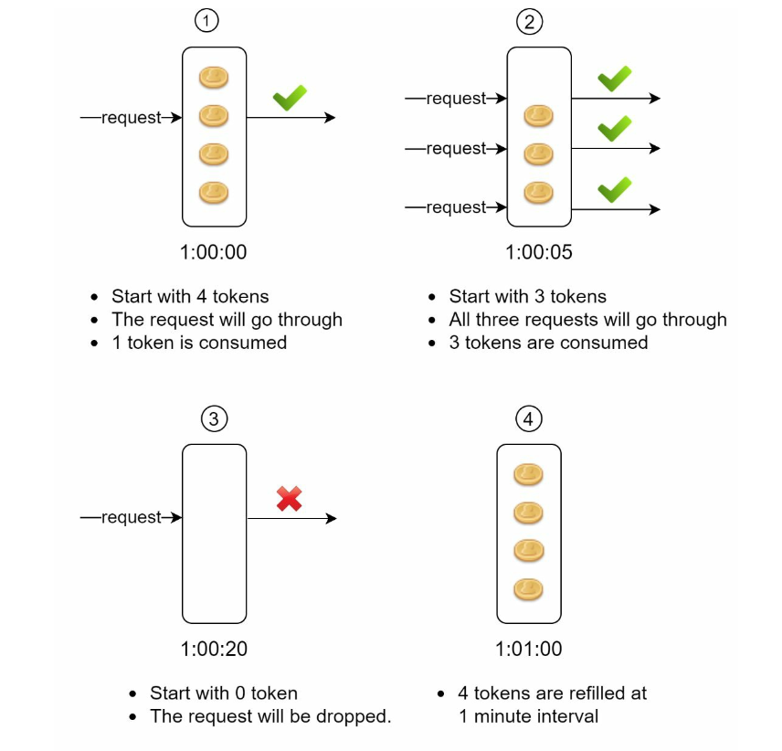
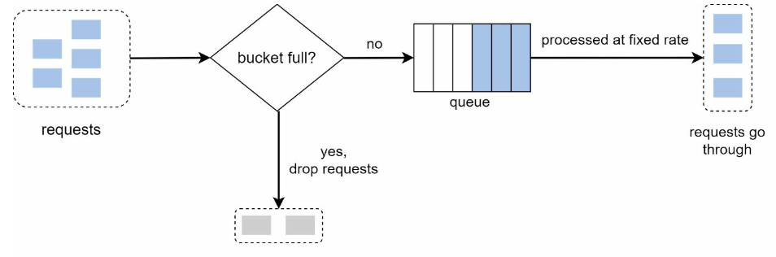
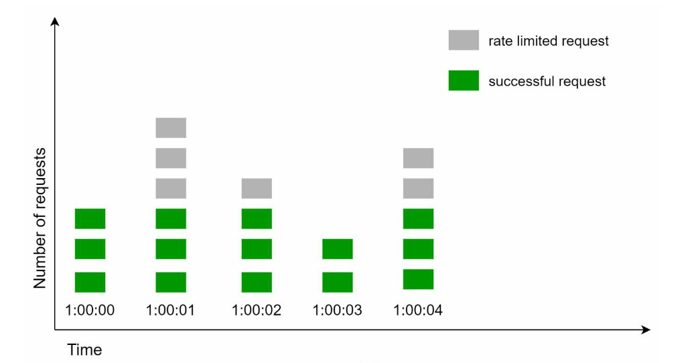
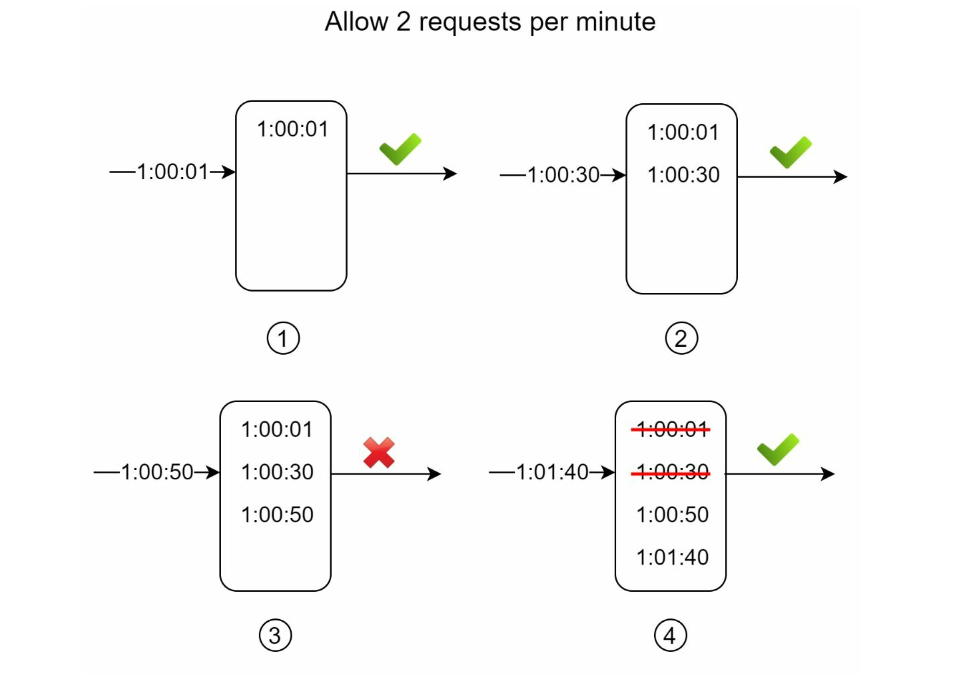
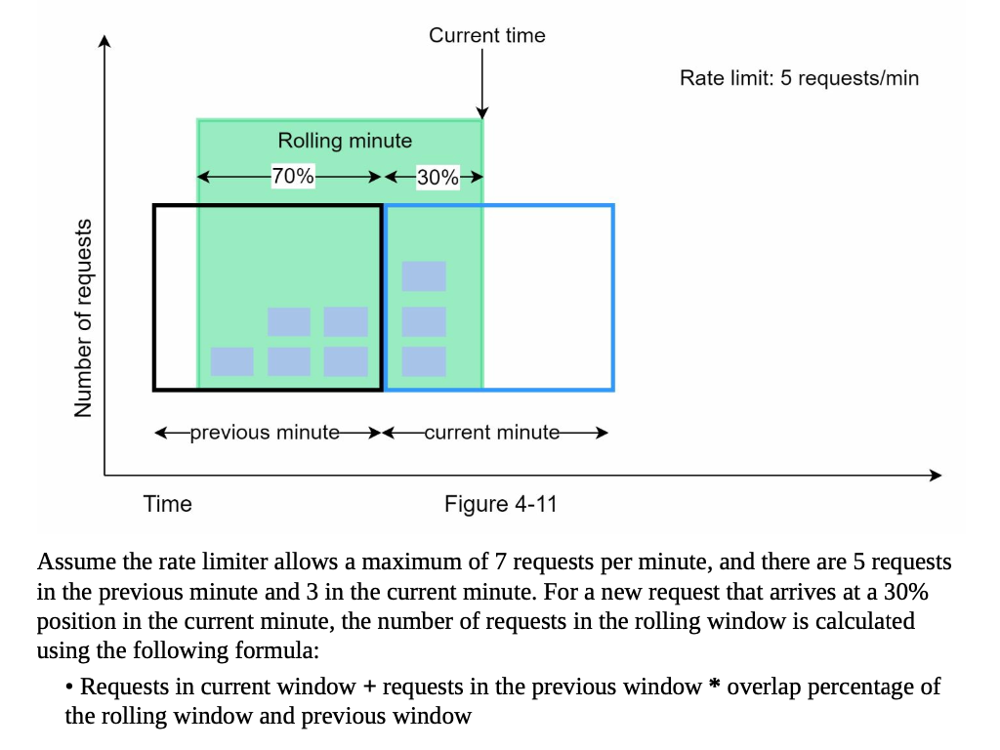

🖇 Rate Limiting Strategies
Суть rate limiter-a в том, чтобы не допускать перегрузки системы. Это та штука, которая следит за тем, чтобы объемы трафика не превышали установленных значений.
Нужно обрабатывать запросы, когда их объем не превышает лимитов. В противном случае “лишние” запросы надо игнорировать/отклонять. Как именно это сделать? Какой логикой руководствоваться?
Рассмотрим 5 популярных алгоритмов:
1. Token bucket
В “ведро” с некоторой перидоичностью насыпают токены. Каждый входящий запрос = 1 токен. Если во время получения нового запроса в “ведре” есть токены, запрос обрабатывается, иначе - отклоняется.

2. Leaking bucket
Вместо ведра - очередь запросов определенного размера, запросы из которой периодически достаются и обрабатываются. Если во время получения нового запроса в очереди есть место - он в нее добавляется, если нет - отклоняется.

3. Fixed window counter
Определяем фиксированные промежутки времени и максимальное количество запросов за этот промежуток. Если во время получения нового запроса лимит текущего промежутка не превышен, он обрабатывается, иначе - отклоняется.

Why problematic: скопление трафика на краях временных промежутков ломает схему ограничения.
4. Sliding window log
Ведем лог всех запросов за установленный промежуток времени t. Устанавливаем лимит запросов в этот промежуток t. Получая новый запрос х, смотрим в логах, сколько запросов попало в (x-t; x) - если это значение меньше лимита, обрабатываем запрос. Если нет - отклоняем.
Why problematic: использует довольно много памяти, потому что пишет в логи все

5. Sliding window counter

Если полученное число меньше лимита, обрабатываем запрос. Если нет - отклоняем.